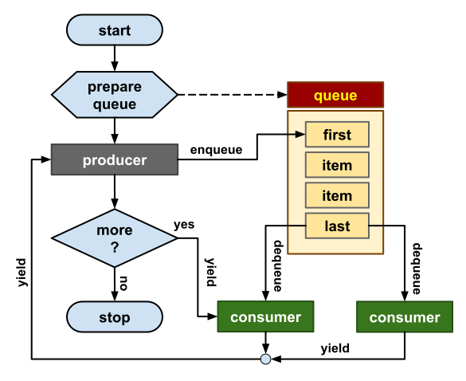

Bee Coroutines
Coroutines
Coroutines are rules that can be suspended with all states ready then resumed on demand multiple times. Each time we resume a coroutine this can produce one result that we capture. So a coroutine can produce multiple results until finishes.
Example:
Coroutines can be used as a branch of main thread. This is not yet running in parallel but is an example for how a rule can play as a coroutine.
- you need only one coroutine to create a side branch,
- call a branch using start keyword and suspended using yield keyword,
- resume a coroutine using yield plus routine name.
rule test(n ∈ N) => (result ∈ N):
** can generate n numbers
for ∀ i ∈ (1..n) do
result := i;
** suspend execution
yield; -- wait for the main thread
repeat;
result = 0; -- finalization signal
return;
** start secondary process
dtart test(9) -- initialize coroutine
begin:
r ∈ N; -- result reference
do
yield r <- test; -- capture next result
write (r, ",");
repeat if r > 0;
print; -- 0,1,2,3,4,5,6,7,8,9,
Note:&In the example above, the program is still working in serial mode, except that has a branch running on a separated thread. When the coroutine function the main thread is on hold, and when the main thread function the coroutine is waiting.
Producer consumer
Producer consumer pattern is using coroutines that can work in parallel in asynchronous mode. That means we start coroutines and do not wait to finish but let the main thread to continue. A producer is preparing the work and the consumer is doing the work.
If you do not know how this works, take a look to the diagram below. We have one rule called "producer" one list that act as queue and a routine called "consumer". The queue has a limited capacity. We can use same consumer twice, if we do then the application is also multi-threading.
.

Producer Consumer
Diagram
Notes:
- for this you need two rules: one is producer and other is consumer,
- the main thread is starting threads using begin ,
- producer is a dispatcher that distribute the work,
- producer is usually working on a single thread;
- consumer is a worker that resolve a task given by the producer;
- consumer is usually working on multiple threads;
Example:
Info: This example is complex so we have chosen to keep it on GitHub with the Bee project. If you want to visualize it you need Notepad++ and color syntax highlighter. Go back to index page and follow the instructions at the bottom of the page.
Read more:
Graphics
Producer Consumer
Diagram